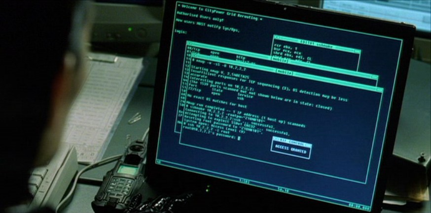

| For the first part of this
lab you are going to be using tools that a system
administrator usually uses to diagnose network trouble,
except we are going to use the tools to experimentally
investigate the properties of the Internet. You might be
surprised to read that no part of this lab will rely on
Snap! or any other programming. Instead, we are going to use
the Linux shell. Click on the image on the right to see a
prominent featuring of a shell in a movie. Most parts of
this lab require discussion and answering questions. Please
make sure to take the time and brainstorm with your peers.
You can put the responses down on paper or use our Google
Form. The Linux shell is a very powerful tool that takes decades to master. In this lab, we will therefore only glimpse at it. A simple, 10-minute introduction to the Linux shell can be found here: Watch video now. While you do not need any particular Linux command line skills in this lab, we recommend watching the video anyways to get an initial idea for typical shell usage. A note: For this lab, we highly suggest refraining from the usage of the command rm -rf. It's highly powerful but can render entire computer systems unusable or brick tablets and cellphones easily. Every system administrator has his or her own story to tell. Start your own shell now (possibly ask a lab assistant or TA for help) or consult the videos below and go on to the next page. Note that this lab might not completely work under Windows. Start a shell on Linux Start a shell on Mac Start a shell on Windows |
 |